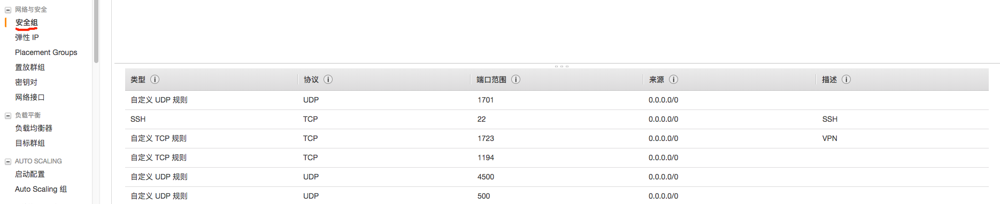

利用AWS免费账户搭建L2TP VPN
为了能够访问外面的世界，我们总是要经过千山万水的辛苦。作为一个码农，如果可以使用自己的代理服务器那是再好不过了。目前常用的方法是在墙外买一台服务器，搭一个代理服务，然后自己的客户端去连接这个服务。
网上有很多如果使用AWS免费账号基于PPTP的VPN搭建教程，都写得非常好。但是由于Mac已经默认不支持PPTP协议了，所以最好使用别的服务协议。L2TP协议比PPTP协议更为安全，我们这里介绍如何使用L2TP协议搭建免费VPN。
主要包括以下4个步骤
- 购买免费的AWS服务器
- 启动EC2
- 在EC2搭建L2TP协议服务
- 配置客户端
详细介绍
第一步 购买免费的AWS服务器
进入AWS主页, 按照指示完成注册.
需要注意注册过程会有一步 Identity Verification by Telephone,需要输入电话号码然后点击”Call Me Now”, 稍等片刻 Amazon 会有电话拨过来，接到电话后在电话上输入您屏幕上的 “Your Pin:” 后标示的四位数字即可.
之后会要求选择AWS Support Plan, 当然选Basic (Free)。注册成功之后会进入Thank you页面, 选择启动AWS管理控制台。

第二步 启动EC2
- 选择region部署区域, 可以选择东京
- 创建下载 Key Pairs 进入控制台后, 默认就会来到EC2 Dashbord页, 在这里选择Key Pairs 创建 Key Pairs。
- 启动EC2实例 回到EC2 Dashbord页, 在这里选择Launch instance


完成后会得到一个.pem文件, 把他移动到~/.ssh目录下并更改权限为600。
 选择需要的系统, 注意选择免费系统。
选择需要的系统, 注意选择免费系统。
 接下来选择实例的时候，默认的实例就是免费实例。之后一路Next(Add Storage那里可以适当加点, 但是不要超过30G)。
接下来选择实例的时候，默认的实例就是免费实例。之后一路Next(Add Storage那里可以适当加点, 但是不要超过30G)。一直到Configure Security Group 这里除了默认的ssh 22 端口外, 还要开放1194、1701、500、4500端口, 否则连不上VPN。如果以后连接有问题，注意查看端口是否都配置好了。下图中的1723端口是PPTP协议的，这里不用设置
 在launch EC2实例之前, 会有一步让你选择key pair, 用刚才创建的那个即可。
第三步 在EC2搭建L2TP协议服务
- 为EC2实例绑定Elastic IP 创建完的EC2实例虽然有自己的公网IP, 但是每次重新启动都会变化，所以需要为其绑定Elastic IP
- 通过ssh登录EC2实例 打开终端, 使用ssh登录EC2实例，可以使用以下命令登录。注意使用自己的IP地址和pem文件
- 使用自动脚本配置L2TP服务 https://git.io/vpnsetup 提供了自动配置的sh脚本, 在EC2执行如下命令
 申请完之后, 将其与刚才创建的EC2实例关联
申请完之后, 将其与刚才创建的EC2实例关联

ssh ubuntu@13.xxx.xxx.xxx -i ~/.ssh/aws-server.pem
$ wget https://git.io/vpnsetup -O vpnsetup.sh && sudo sh vpnsetup.sh
屏幕上就会打印出VPN的账号密码，如下图
第四步 配置客户端
https://github.com/hwdsl2/setup-ipsec-vpn/blob/master/docs/clients.md
相关连接